Interactive route map
先看地图，再看每天怎么走
地图中青色实线表示 D400 自驾或轨道交通，橙色虚线表示境内航班与 Kekova 船线，蓝色虚线表示 Kadıköy 渡轮＋短程接驳。卡帕多奇亚详情同时显示 9/28 的 Ihlara 条件分支；点击编号可以查看建议停留时间和附近用餐点。
Trip at a glance
不全国开车，把时间留给真正重要的地方
这版按你的自然偏好重排：卡帕多奇亚只住 2 晚。9/28 不再空等——9/27 取消就补飞热气球，成功就走 Ihlara 约 4 公里溪流峡谷；17:30 两条分支都回到已订的 ASR→AYT 航线。
9/28 晚从 ASR 飞走
9/27 08:30 后锁定 9/28 分支
古剧场日落＋Kekova
AYT 取、DLM 异地还
伊斯坦布尔→格雷梅↔Ihlara（条件分支）✈安塔利亚🚗下杜登→卡什→Kekova→Patara→蝴蝶谷崖顶→厄吕代尼兹→费特希耶✈SAW🚇Kadıköy⛴欧洲侧🚇IST
Risk control & Plan B
先保核心体验，再按时间主动删减
9/28 先按 9/27 的热气球结果分流，再在 17:30 汇合去 ASR：取消就争取补飞，成功就去 Ihlara。PC3503 已订，但仍要确认电子客票号、托运行李和深夜酒店接送。
热气球和 Ihlara 只做一个，不临时叠加
分支 A
9/27 因天气取消 → 9/28 补飞热气球
只有原运营商书面确认改期且仍有余位才成立；约 04:30–08:30，之后早餐、补觉和退房，Ihlara 自动取消。
分支 B
9/27 成功升空 → 9/28 Ihlara
07:30 前早餐退房，08:00 私人司机出发；09:30 入谷，走约 4 公里至 Belisırma，12:45 硬性离开。
15:00
最迟回到格雷梅
取行李、简单更衣、休息和提前晚餐；不得把景点延误转嫁给机场接送。
17:30
两条分支共同前往 ASR
目标 18:30–18:50 抵达，满足订单提示的提前 3 小时到机场；PC3503 仍按 22:05 起飞执行。
Ihlara 只使用可在 Belisırma 异地接人的私人司机或包车司机；普通绿线团回程不可控，不建议参加。默认方案为 2号台阶主入口下、Belisırma 接；出发前一周必须再次核对官方开放信息。若 2号入口关闭，只在司机书面确认可改走 1号入口或从 Belisırma 反向进入、且仍能 12:45 离谷及 15:00 前返回时执行，否则取消 Ihlara。官方开放信息 ↗
NAV 进、ASR 出；不要再搜 NAV→AYT
- 已订：9/28 Pegasus PC3503，开塞利 ASR 22:05 → 安塔利亚 AYT 23:25。订单提示提前 3 小时到机场，17:30 从格雷梅出发，接送预留 60–80 分钟。
- 出票待确认：截图显示“订单未出票完成”；看到两人的电子客票号并核对托运行李额度后，才把出票状态视为完成。
- 机场区别：你已订的 9/26 航班落地 NAV（内夫谢希尔）；9/28 直飞从 ASR（开塞利）起飞。两座机场不是同一个，搜索 NAV 会看到大量伊斯坦布尔中转。
- 取消／错过：先让航司改签到最早可行航班；若只能次日经伊斯坦布尔转机，就住开塞利机场附近，9/29 取消下杜登并直接去卡什。夜巴只作为自愿接受通宵疲劳的最后备选。
卡帕多奇亚直接开到安塔利亚约 500 多公里，实际应按 8–9 小时看待；中间多数是高原转场，不值得为这趟路线专门异地租车。Pegasus 官方航线 ↗
上午 08:30 取车，日落任务就有余量
08:30
机场取车
深夜住有接送的 AYT / Lara 酒店；早餐退房后回机场取车，拍完车况再出发。
09:30
下杜登陆地观景
停 45–60 分钟，10:30 前离开；若取车排队超过 90 分钟就跳过瀑布，保住白天驾驶与日落。
约15:00
卡什入住＋古剧场日落
途中只做午餐和服务区休息；停车后不再开车，日落前 45–60 分钟步行去剧场。
保证到达正确地点，不保证晚霞
- 热气球两天都取消接受退款，不再为卡帕多奇亚加住一晚；9/28 既然已执行补飞分支，就不再临时赶 Ihlara，下午用于补觉和整理行李。
- 卡什古剧场多云9/29 仍看海景和蓝调时刻；若取车延误或临时关闭，9/30 从 Limanağzı 早一班返港后再尝试。
- 蝴蝶谷低云或下雨固定主线也服从安全：能见度差、路面湿滑或没有合法宽阔停车位时不停车，更不靠崖或尝试下谷。
- 厄吕代尼兹多云保留泻湖景观，不为追晚霞改动 10/3 返程航班。
蝴蝶谷进入主线，Kalkan 仍然先砍
编号＝当天保留优先级；蝴蝶谷崖顶是计划内固定停靠，但道路和停车安全始终拥有否决权。
1安全与天亮驾驶2D400海岸段3蝴蝶谷崖顶4厄吕代尼兹日落5Patara沙丘海滩6Kalkan
当天时间门槛（和上面的舍弃顺序是两件事）：
- 10:15最迟离开 Kaputaş；晚点先从 Kalkan 的 30 分钟外带停留里找时间。
- Kalkan没有停车位直接跳过；午餐提前买好，不能把蝴蝶谷的时间用在排队吃饭。
- 12:00 后才到 Patara跳过古城并缩短海滩；最迟 13:45 离开。
- 16:20 后仍未到观景点不再找第二个机位；只在合法宽阔位置停 15–20 分钟，16:40 必须离开。
- 安全例外低云、下雨、司机疲劳或没有合法停车位时直接驶往 Ölüdeniz；“必须加进路线”不等于必须冒险停车。
D400 coastal drive
D400 不是一个景点，要知道哪一段值得慢下来
你这趟真正值得专门开的，是卡什 → Kaputaş → Kalkan的悬崖海岸段。10/2 主线约 160 km；Patara 之后还会经 Ölüdeniz 南下 Faralya、固定折返蝴蝶谷崖顶，再回厄吕代尼兹等日落。
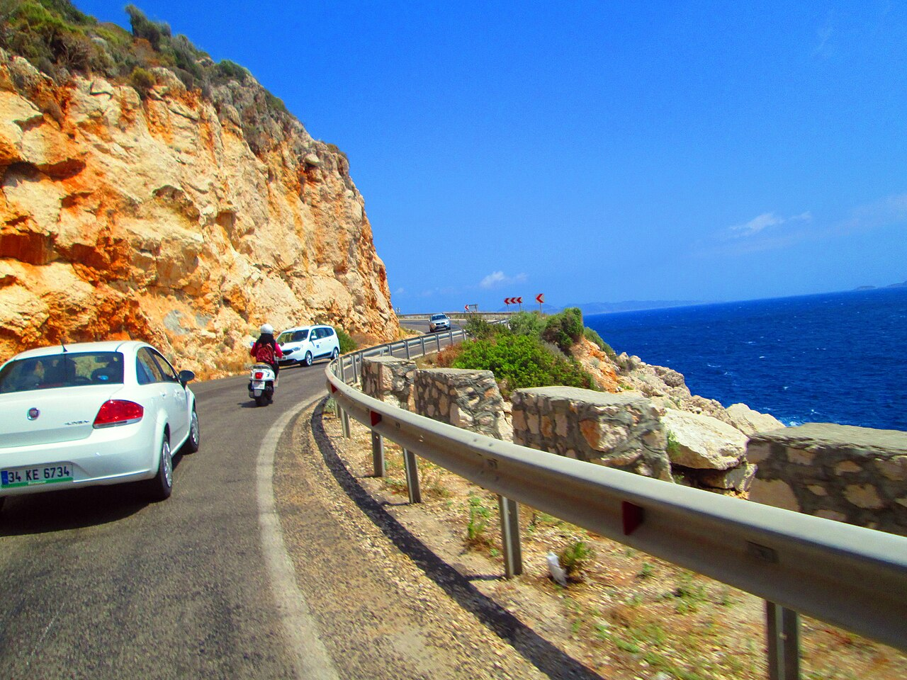
最美段：卡什 → Kaputaş → Kalkan
连续海景主要集中在卡什以西到 Kalkan；过了 Kalkan 转向 Patara 后会进入农田与内陆道路，最后才在 Faralya 再次回到高崖海景。不要把约 160 km 全部想象成贴海公路。
当天景色最集中的一段。司机只看路，乘客负责拍照；观景必须等正规停车位。
Kaputaş 约有 200 级台阶，停车位少。Kalkan 只停 30 分钟买咖啡或午餐，找不到位就优先跳过。
这一段海景减少。你的重点改为沙丘与长海滩，古城只在时间充裕、仍有兴趣时顺路看。
先沿主路接近 Ölüdeniz，再南下 Faralya；这不是 Kalkan→Patara 之间的顺路小停。预计 15:50–16:20 抵达，只停 15–20 分钟。
沿原路折返，争取 17:10 前停好车；当天预计 18:45 日落，蓝调后再前往费特希耶入住。
停车规则蝴蝶谷是天然高崖，不是有护栏的大型观景区；只在合法、宽阔且不妨碍车流的位置停车，不能在弯道或路肩排队等位。
驾驶准备前一晚在卡什加满油，下载离线地图；带偏光太阳镜，右侧海面反光强。
崖顶规则不跨越护栏、不靠崖边自拍、不从 Faralya 绳索陡径下谷。低云、雨天、强风或无合法停车位时，安全否决停靠。
晚点处理先跳过 Kalkan 和 Patara 古城，再缩短海滩；13:45 必须离开 Patara。仍晚点就接受日落前停留变短，绝不超速。
景点依据：Kaputaş 位于 Kaş–Kalkan 公路；蝴蝶谷崖顶位于 Faralya / Uzunyurt 方向，官方资料明确提醒下谷路线非常陡。本行程只做崖顶远观，不下谷。出发前一周复核道路施工、降雨、能见度和 18:45 左右的日落时间。
Day by day
方案 B · 每日上午、下午与晚上
09.24
周四 · Day 1
住：伊斯坦布尔
Airbnb
Airbnb
上午
抵达伊斯坦布尔
11:25 抵达 IST，入境、取行李并前往 Sultanahmet。交通卡不拿景点图片冒充当天所见。
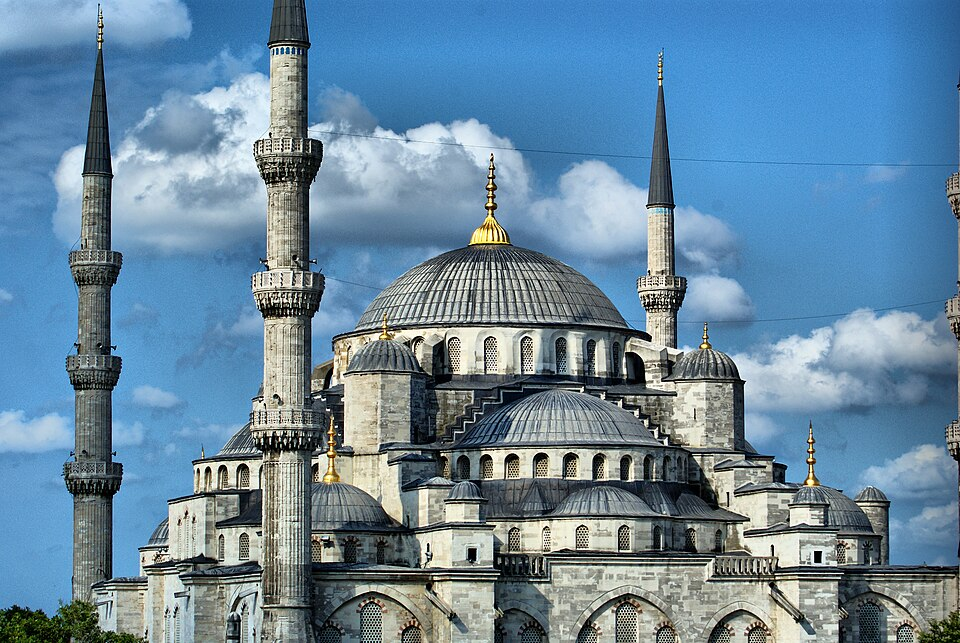
下午
蓝色清真寺
入住后只走苏丹艾哈迈德广场，不购买限时博物馆票；礼拜时段以现场为准。
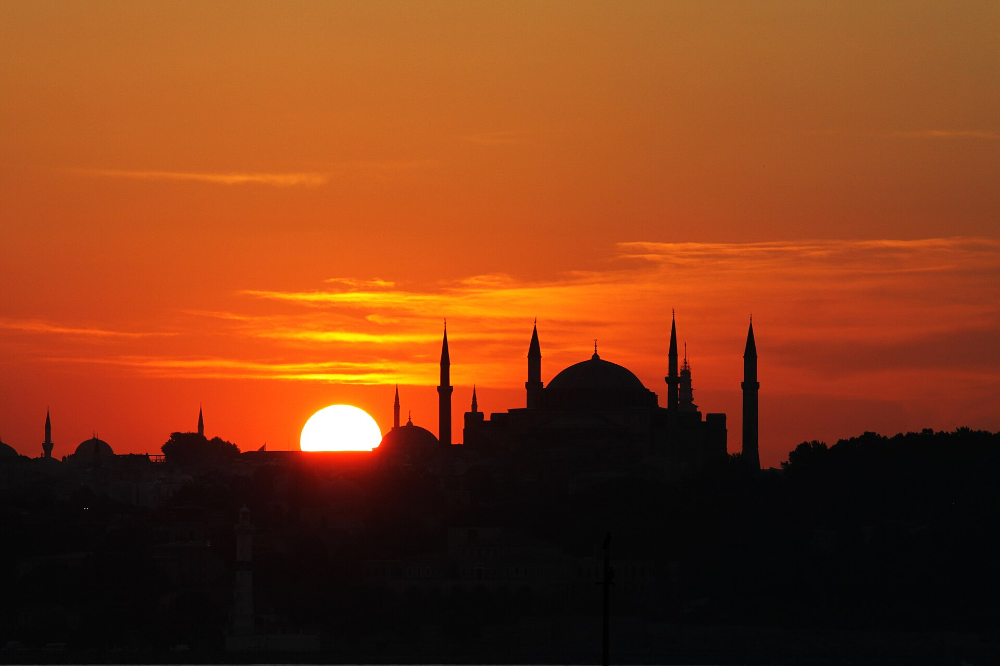
晚上
屋顶晚餐＋圣索菲亚外观
选择能看到圣索菲亚与蓝色清真寺的屋顶餐厅；本日只看外观，不排队进室内。
这样安排：国际长途飞行后的第一天不塞景点，避免入境或堵车导致预约作废。
09.25
周五 · Day 2
住：伊斯坦布尔
Airbnb
Airbnb
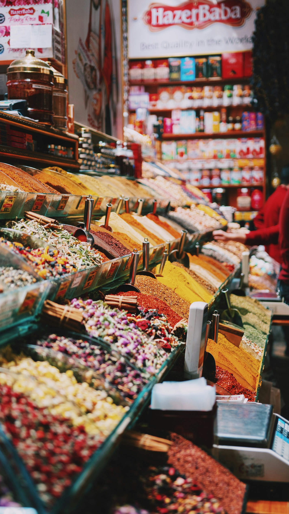
10:00–12:30
香料市场＋加拉塔桥
不设闹钟赶收费景点；早餐后慢慢逛香料市场和桥边，午餐留在 Eminönü。
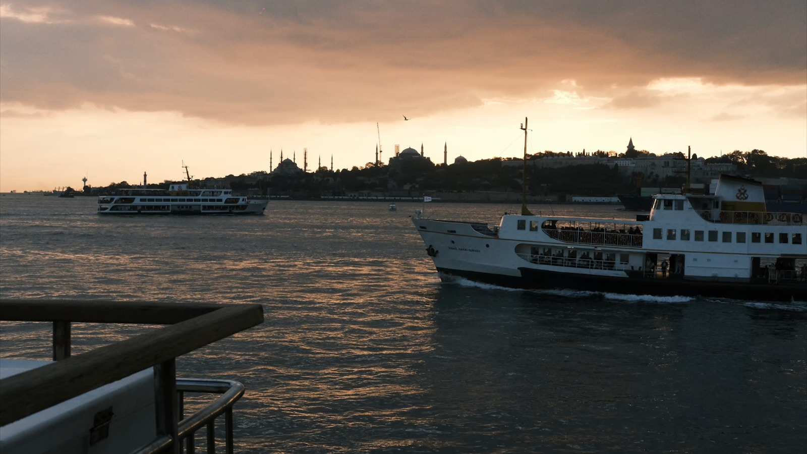
13:50到码头 · 14:40开船
14:40 博斯普鲁斯短线游船
到 Şehir Hatları 官方窗口购买 Kısa Boğaz Turu；航程约 2 小时，提前 30–45 分钟候船。季节班次只以官网为准。
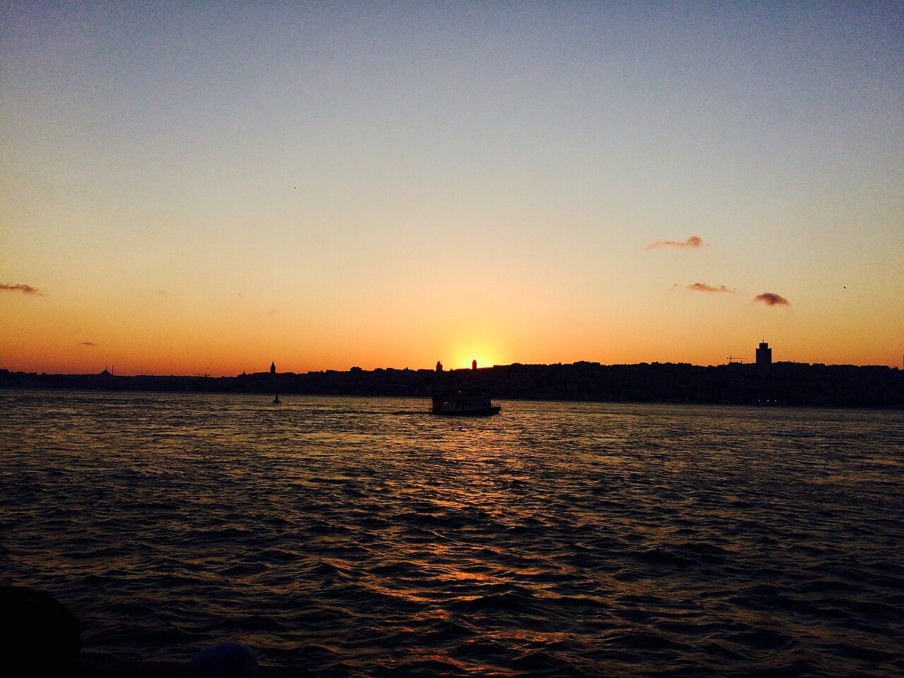
17:15后
Üsküdar 海边日落＋晚餐
游船返回后乘普通渡轮到亚洲区；沿海边散步，在 Kadıköy 或 Üsküdar 吃家常菜。
这样安排：删除室内建筑和限时门票，把国际航班后的恢复时间留足；当天唯一硬时间是 13:50 到 Eminönü 官方码头。
09.26
周六 · Day 3
住：格雷梅
民宿 / 洞穴酒店
民宿 / 洞穴酒店
07:45–约11:00
SAW→NAV（已订）
VF3268，09:00 抵达；取行李后乘接送约 40–50 分钟到格雷梅。
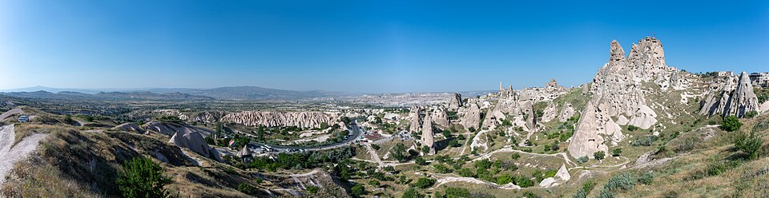
12:30–16:00
乌奇萨＋鸽子谷
城堡高点看全区地貌，再用鸽子谷短步行连接第一批全景；不把时间耗在室内建筑。
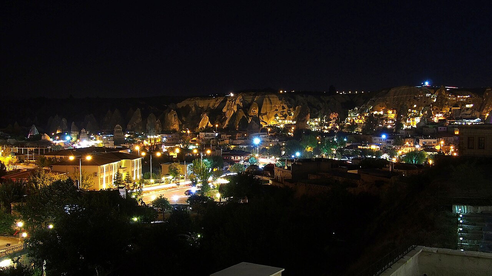
17:30–19:30
格雷梅日落观景台＋洞穴镇夜景
Aydınkırağı / Sunset Point 先看日落；日落后继续停留 30–45 分钟，看镇区与洞穴酒店逐渐亮灯。只沿主路下山，天黑后不进入山谷小径。
这样安排：上午航班已确认，下午立即进入最有辨识度的全景线；约 20:00 前回酒店，既保留蓝调夜景，也不影响次日约 04:30 的热气球接人。
09.27
周日 · Day 4
住：格雷梅
民宿 / 洞穴酒店
民宿 / 洞穴酒店
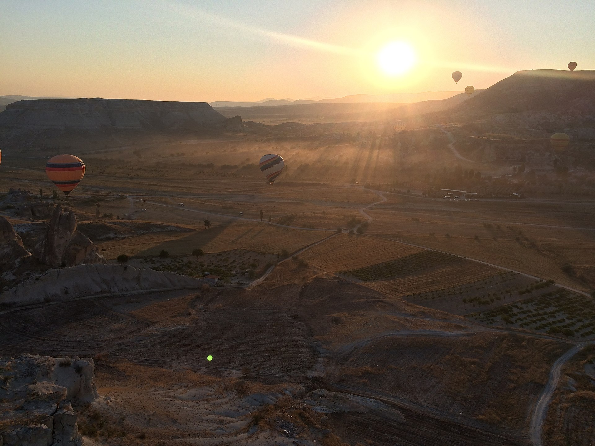
约04:30–08:30
热气球机会 1
只向 SHGM 名单内的持证运营商预订第一批升空；约 60 分钟飞行，确认天气取消全退。
08:30–15:30
早餐＋补觉
取消露天博物馆。热气球后回酒店吃早餐，至少睡 2–3 小时；午餐后再决定徒步强度。
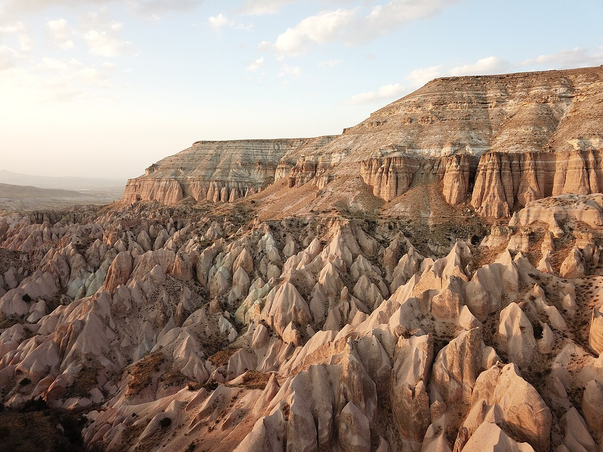
15:30–日落
红谷＋玫瑰谷徒步
安排 2.5–3 小时自然线，选择短环线并在 Kızılçukur 看颜色变化；体力不足则缩为观景台。
体力预期：这是全程最早起的一天。上午明确留白补觉，下午才走自然线；若热气球取消，也不要把空档塞成室内或建筑型半日团。
09.28
周一 · Day 5
住：AYT / Lara
深夜接送酒店
深夜接送酒店
分支 A · 约04:30–08:30
9/27 取消 → 热气球机会 2
仅在 9/27 因天气取消、且原运营商确认 9/28 仍有余位并完成改期时再飞；飞完后早餐、补觉、退房，今天不再去 Ihlara。
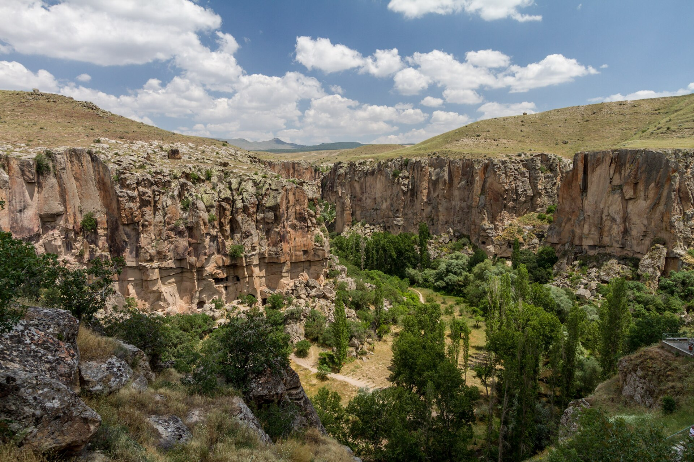
分支 B · 08:00出发 · 15:00前返回
9/27 成功 → Ihlara 峡谷
私人司机约 09:30 送到 2号台阶主入口（出发前一周复核开放），下 382 级台阶后沿 Melendiz 河走约 4 公里至 Belisırma；教堂只顺路看一处或全跳过。12:45 硬性离开，由司机异地接回格雷梅。
17:30–23:25
PC3503 已订：格雷梅 → ASR → AYT
17:30 乘接送去开塞利 ASR，目标 18:30–18:50 抵达；PC3503 计划 22:05–23:25 直飞安塔利亚。电子客票号和托运行李仍需确认，落地后只去有深夜接送的 AYT / Lara 酒店入住。
二选一规则：9/27 08:30 后立即锁定分支。取消就让第二次热气球继续保持核心价值；成功就用 Ihlara 的溪流峡谷替代空等。两条分支都必须 16:30 前完成取行李和提前晚餐，17:30 离开格雷梅。
09.29
周二 · Day 6
住：卡什
Airbnb
Airbnb
07:30–09:30
AYT / Lara 早餐＋取车
酒店接送回机场，08:30 办理取车；完整拍摄车身、轮胎、玻璃、油量与里程后再出发。
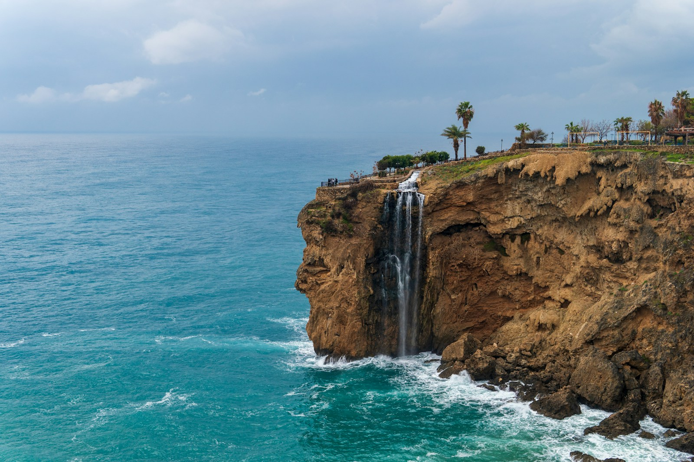
09:30–10:30
下杜登瀑布
距机场约 14 km，只走 Gençlik Parkı 陆地观景台，不坐船。若取车严重排队，优先跳过瀑布。
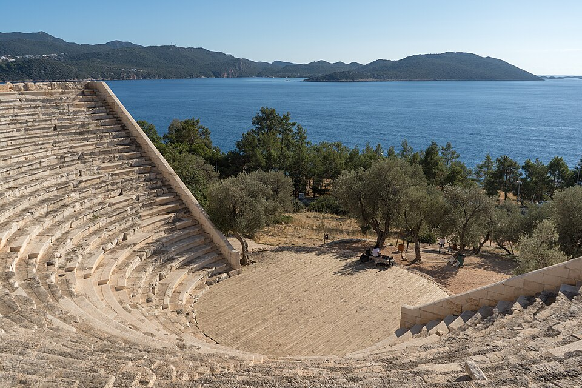
约15:00入住 · 日落前45–60分钟
D400 转场＋卡什古剧场日落
下杜登后约 189 km，午餐和服务区合计最多 45 分钟。停车入住后步行去剧场，不再开车。
执行门槛：10:30 前离开下杜登；若 10:00 仍未取到车，直接驶往卡什。9/29 是古剧场日落主机会，9/30 是天气或取车延误后的备份。
09.30
周三 · Day 7
住：卡什
Airbnb
Airbnb
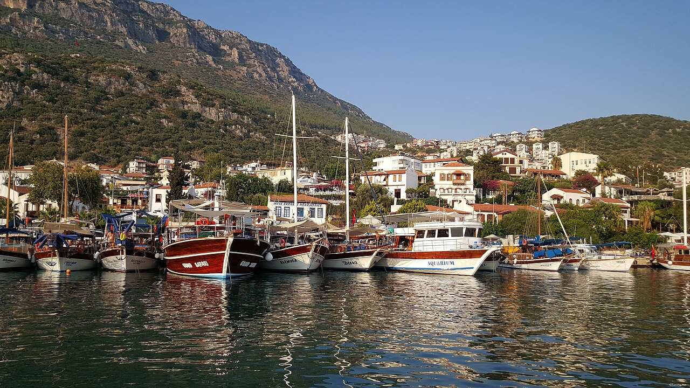
08:30–10:00
卡什港口＋老城
沿港口、Uzun Çarşı 和小巷短逛；狮子墓只顺路看，不把建筑当主角。
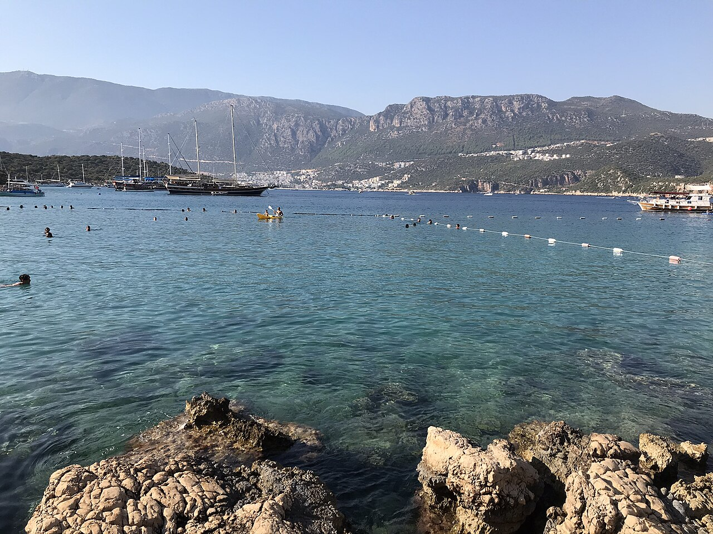
10:15–15:30
Limanağzı 游泳＋浮潜
前一晚确认季节性水上巴士；通常从卡什港乘小船约 15–20 分钟。带泳镜和水鞋，在海湾午餐。
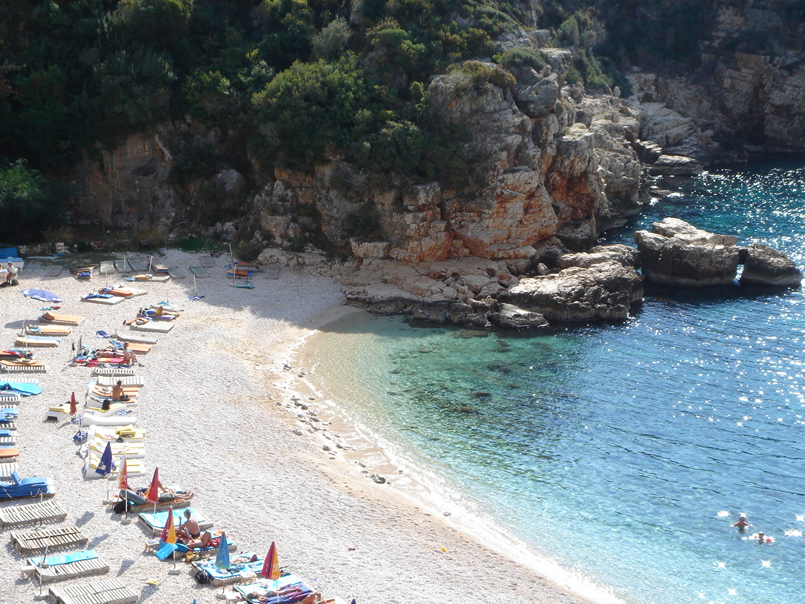
16:30–日落 · 轻量
Büyük Çakıl 海湾
从 Limanağzı 回港后先回房休息；体力仍好再去大卵石海滩看傍晚，若 9/29 剧场失败则用这段时间补剧场。
为什么这样玩：这一天不赶路，上午认识小镇、白天真正下海、傍晚留给休息或第二处海湾。若更喜欢活动，可用 2.5～4 小时体验潜水替换 Limanağzı；9/29 剧场没完成时，16:30 后优先补剧场。
10.01
周四 · Day 8
住：卡什
Airbnb
Airbnb
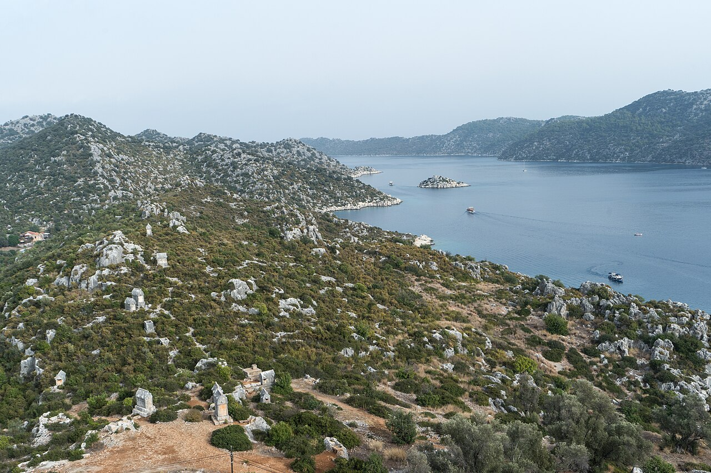
08:30–12:30
Kekova 海湾出航
从卡什出发选完整日船；若从 Üçağız 登船，要另算往返卡什约 50 分钟车程。
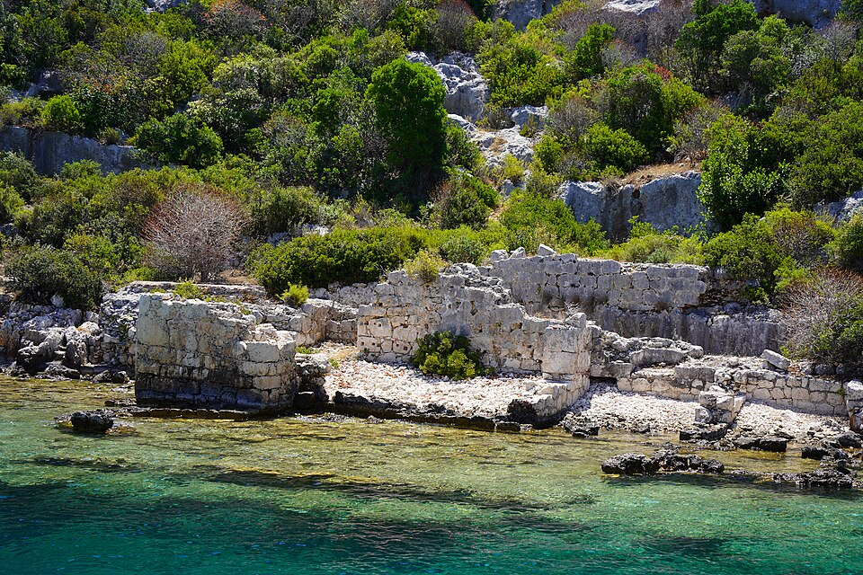
下午
水下古城＋Simena
船上俯看半沉遗迹，游泳只安排在遗址保护水域之外；Simena 通常只能从海路抵达。
约18:00后
返回卡什
港口附近吃海鲜，确认次日车辆油量和离线地图，整理泳具与行李。
这样安排：Kekova 值得完整一天，不压缩成两小时“打卡”项目。
10.02
周五 · Day 9
住：费特希耶
民宿 / 小酒店
民宿 / 小酒店
07:30–08:00
D400 卡什—Kalkan 景观段
卡什到 Kaputaş 是当天最值得看的驾驶段；只在正规停车位停车，乘客负责拍照。
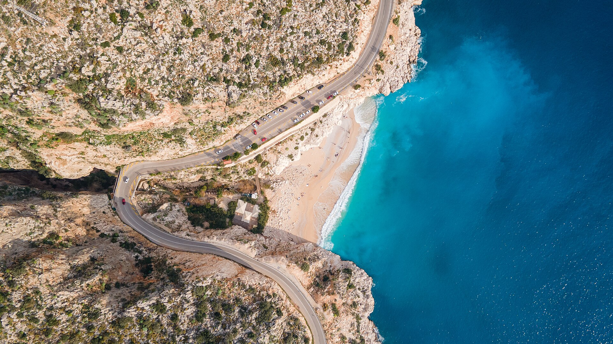
08:00–10:15
Kaputaş 海滩
约 200 级台阶；停车位满就不要在路肩等。Kalkan 只外带午餐，无位直接跳过。
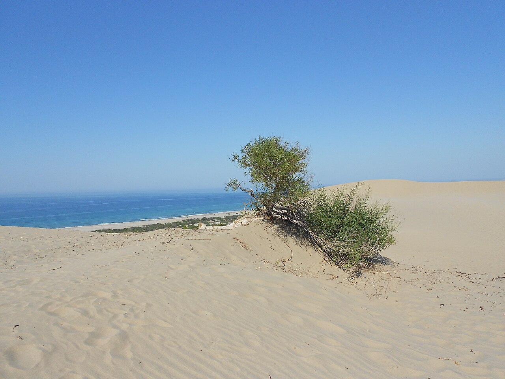
11:15–13:45
Patara 沙丘＋海滩
按你的自然偏好，把时间给沙丘、海风和游泳；古城只做有余力时的顺路短看。13:45 必须上车，给 Faralya 高崖路留缓冲。
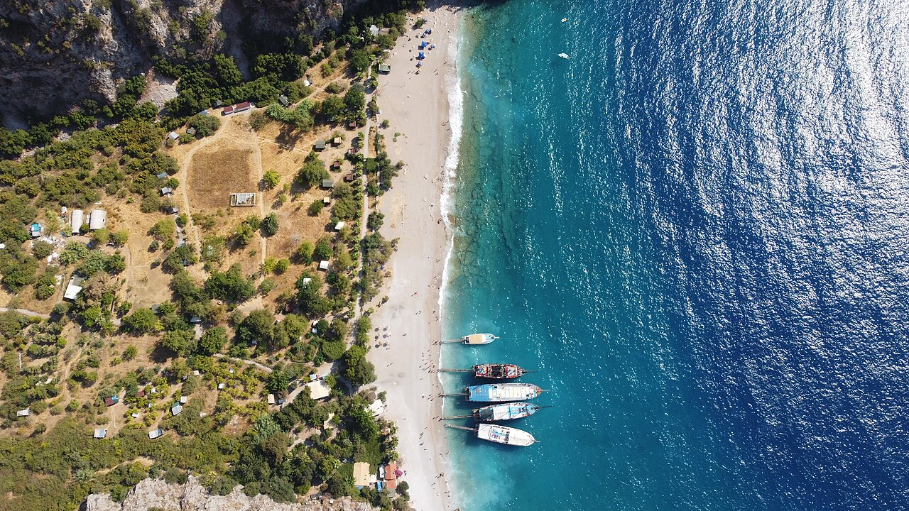
预计15:50–16:20抵达 · 停15–20分
蝴蝶谷崖顶观景台（Faralya）
这是 10/2 固定主线自然景观；最迟 16:40 离开。只在合法宽阔位置停车，不靠崖自拍、不下谷；雨雾或无安全车位时由安全否决。
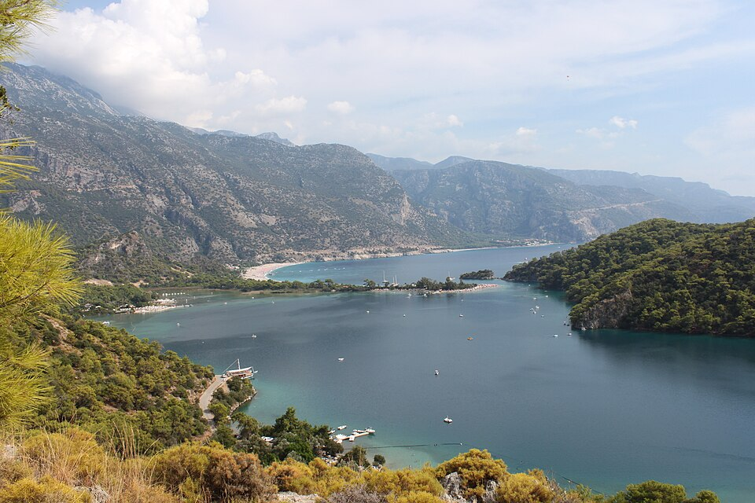
17:10前抵达 · 18:45日落
厄吕代尼兹＋Babadağ 远景
从 Faralya 沿原路折返，停好车后在泻湖慢走；蓝调约 19:10 后再去费特希耶入住，不临时加缆车。
固定主线：D400、Kaputaş、Patara、蝴蝶谷崖顶与厄吕代尼兹。晚点先删 Kalkan，再删 Patara 古城并缩短海滩；蝴蝶谷已进入正式路线，但雨雾、疲劳和非法停车绝不硬停。
10.03
周六 · Day 10
住：欧洲侧 Gayrettepe
步行到 M11 实际入口
步行到 M11 实际入口
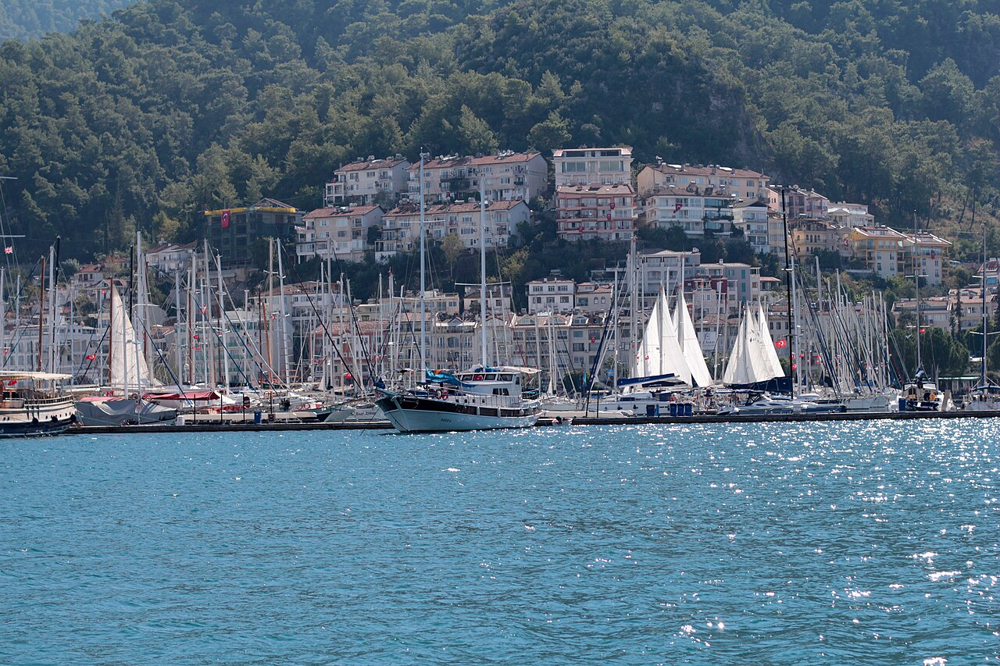
出票后倒推 · 参考08:30–09:30
码头早餐＋退房
目标航班允许时睡到自然醒，也不再加入峡谷或沿途打卡。早餐后沿码头短走，回住宿取两件行李；若最终航班更早，就缩短早餐而不是压缩还车缓冲。
出票后倒推 · 起飞前约3小时还车
费特希耶 → DLM → SAW
费特希耶到 DLM 约 50 km／50–60 分钟。加满油、在 OPET 交车点验车拍照，再进航站楼。若想保留一个下午＋傍晚，优先订15:00前落地 SAW的直飞；15:00–16:00 落地只承诺码头日落＋晚饭。
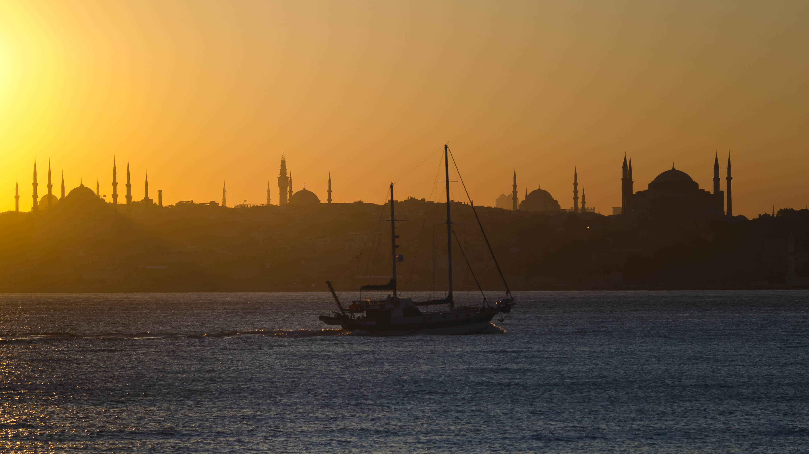
落地到码头预留100–130分 · 18:43日落
Kadıköy码头海边＋市场
M4 从 SAW 车程约 52 分钟；另计取托运行李、步行、候车和出站。你们全程带着行李箱、不寄存，因此只走码头海边和市场两点：在近岸看日落，再到市场吃饭；不走 Moda 长距离路线，也不跨去 Üsküdar。
晚饭后 · 优先20:15或20:45渡轮
携带行李箱乘渡轮 → 欧洲侧酒店
取最近一班 Kadıköy→Beşiktaş 官方渡轮，行李始终在身边；抵达后短程打车到 Gayrettepe，入住步行 5–10 分钟可达实际 M11 入口的酒店。10月班次须临行复核。
当天基调：不赶景点。南部早上从容收尾，亚洲区只体验彼此相邻的码头海边和市场；行李不寄存、不走长距离，晚饭后用渡轮完成一次海峡夜景，再住到次日能直接搭 M11 的欧洲侧。
10.04
周日 · Day 11
返程日
08:30–09:00
早餐＋退房
从 Gayrettepe 酒店步行到预先核实的 M11 入口；不再横穿城区，也不依赖机场酒店接送。
09:00–约10:00
M11 → IST
乘 M11 前往伊斯坦布尔机场，连进站、候车和航站楼步行按约 1 小时预留，目标 10:00 前抵达。
13:20
飞往北京
国际航班起飞，次日抵达北京；返程卡不再用热气球图片冒充当天景点。
Book these three
1 / 2 / 3：真正需要提前联系的活动
这里写的是可直接执行的预约方法，不是泛泛的“建议提前订”。日期、人数、关键问题和可复制英文都已按本次行程填好；价格与班次仍以经营方书面回复为准。
09.30 · 卡什
1. Limanağzı 游泳＋浮潜
建议先订 Nuri’s Beach 的日间使用。Limanağzı 只能乘船到达，而且船会按经营点下客；直接告诉船家去 Nuri’s Beach，不要只说“Limanağzı”。
- Kaş 市政府介绍：港口小船约每 30 分钟一班、09:00 起、船程 15–20 分钟、末班约 19:00；这不是 9 月底的保证时刻表，前一晚仍须确认。
- 经营方建议提前预约；达到指定消费门槛可享接送船，最低消费及准确上下船点需书面确认，不把接送理解成无条件免费。
- WhatsApp：+90 538 899 32 72。自己游泳不需要另订“浮潜项目”；官网没有承诺提供装备，面镜和呼吸管最好自带。
- 建议 15:30–16:00 返回，为午休、Büyük Çakıl 或补卡什古剧场日落留出时间。
09.27 · 格雷梅
2. 热气球
现在订 9/27 第一批，不同时预付 9/28。9/28 只是天气取消后的改期窗口，而且必须仍有余位；临时到格雷梅再订，很可能只剩第二批或更贵的篮筐。
- Turquaz Standard：最多 28 人、First Ascent、约 60 分钟；Classic：最多 20 人、First Ascent、约 60 分钟。两者每人差价不超过 €20–25 时选 Classic，否则选 Standard。
- 2026-07-27 实时查询：Standard €270/人，Classic €290/人；两人分别约 €540 / €580。余位和价格会变化，以付款页及 WhatsApp 书面回复为准。
- 不要为了便宜选 Second Ascent；你最想看的就是日出时的大规模热气球群。
- Turquaz WhatsApp：+90 554 165 3640。付款前确认总价、篮筐上限、格雷梅酒店接送、飞行约 60 分钟以及主飞行区。
- 经营方因天气或运营原因取消时，Turquaz 当前政策提供全额退款、免费改期或代金券；改到 9/28 仍取决于余位，不能承诺一定有位、保持同一舱型或维持原价。
10.01 · 卡什老港
3. Kekova 海湾出航
首选从 Kaş 老港直接出发的 Bermuda 共享整日船。不用当天开车去 Üçağız，也不会在船后再承担夜路。
- 官网行程：09:30 在 Kaş Yat Limanı 的 Bermuda 销售亭集合，09:45 出航，约 18:00 返回；WhatsApp：+90 532 676 24 11。
- 包含 İnönü、Akvaryum、Tersane 等游泳湾、慢速观看 Kekova 沉没古城、Simena / Kaleköy 约 1 小时，以及午餐、下午茶或水果；酒水和 Simena 城堡门票另付。
- 沉没古城遗址保护水域禁止游泳和上岸；真正下水是在其他获准海湾。
- 官网当前页面显示季节参考价 ₺2,250/人；不要把它当 10/1 锁价。至少确认是否成团、最终 TRY 总价、实际船名与人数、订金和集合点定位。
- 当前官网政策：提前至少 24 小时取消或改期不扣费；24 小时内不退款；船方因天气取消可改期或全退。仍须在付款凭证中再次确认。
Time & distance matrix
每个点玩多久、上一段要走多久
“路程”按正常路线估算；自驾段同时给出纯驾驶时间和实际建议预留。景区时间已经包含基本拍照，但不包含正式用餐。
日期
地点
从上一点出发
建议游玩
最晚离开
9/24
苏丹艾哈迈德广场蓝色清真寺外围＋街区
IST → 老城约 50 km出租/接送 60–90 分钟
2–3小时
19:00
9/25
香料市场＋加拉塔桥早餐、市场和海边慢走
住宿 → Eminönü步行/电车约 15–25 分钟
2–2.5小时
12:30
9/25
14:40 博斯普鲁斯短线Şehir Hatları · Kısa Boğaz Turu
午餐后步行到官方码头13:50 到售票窗口；预留候船
约2小时
约16:45
9/25
Üsküdar 海边日落散步＋亚洲区晚餐
Eminönü → Üsküdar普通渡轮约 15–20 分钟
2.5–3小时
晚餐后
9/26
乌奇萨＋鸽子谷城堡全景与短步行
NAV → 格雷梅约 40 km接送约 40–50 分钟；放行李后出发
2.5–3小时
16:00
9/26
格雷梅日落＋蓝调夜景Aydınkırağı / Sunset Point
镇中心步行约 15–25 分坡路，回程带照明；不进山谷小径
约2小时
约19:30
9/27
热气球接送、早餐、飞行、庆祝
酒店接送包含约 04:30 出发
3–4小时
约 08:30
9/27
红谷／玫瑰谷短环线徒步＋日落观景
格雷梅约 7–10 km车程约 15–20 分钟
2.5–3小时
日落后
9/28
热气球机会 2仅 9/27 取消且确认有余位后改期
酒店接送包含约 04:30 出发
3–4小时
约08:30
9/28
Ihlara峡谷4公里短线（条件分支）仅 9/27 热气球成功后执行
格雷梅 → Ihlara约83 km私人司机单程按1.5小时；Belisırma异地接
约3小时
12:45硬性离开
9/28
格雷梅 → ASRNAV 进、ASR 出，不要走错机场
约 75 km17:30 出发；接送预留 60–80 分钟
约1小时15分
18:30–18:50到机场
9/28
PC3503：ASR → AYT（已订）待确认电子客票号与托运行李
22:05–23:25落地后乘酒店深夜接送
1小时20分
住AYT/Lara
9/29
下杜登瀑布海崖陆地观景台
AYT → 下杜登约 14 km08:30取车；正常约20分钟
45–60分
10:30
9/29
卡什＋古剧场日落入住、休息、步行去剧场
下杜登 → 卡什约 189 km纯驾驶约2小时50分；含午餐预留4小时
1–1.5小时
日落后
9/30
卡什港口＋老城早餐、港口与短巷慢走
住宿 → 港口中心区全程步行
1.5小时
10:00
9/30
Limanağzı游泳、浮潜与海湾午餐
卡什港水上巴士季节班次前一晚现场确认
约5小时
15:30返程
9/30
Büyük Çakıl（可选）轻量海湾傍晚；剧场失败则替换
卡什中心约 2 km短程出租或步行约25–35分
1–1.5小时
日落后
10/1
Kekova＋Simena水下古城与游泳
卡什港出发若 Üçağız 出发则单程约50分车程
8–9小时
约 18:00
10/2
D400＋Kaputaş海岸驾驶、约200级台阶、下海
卡什 → Kaputaş 20 km驾驶预留30分；禁止路肩停车
约2小时
10:15
10/2
Kalkan（可跳过）仅外带午餐或咖啡
Kaputaş → Kalkan 约10 km约 15 分钟
最多30分
10:45
10/2
Patara 沙丘＋海滩自然优先；古城有余力才看
Kalkan → Patara 约17 km约 20–25 分钟
约2.5小时
13:45
10/2
蝴蝶谷崖顶观景台Faralya 高崖远观；不下谷
Patara → 观景台约90 km实际预留2小时05分–2小时35分
15–20分钟
16:40
10/2
厄吕代尼兹泻湖、18:45日落与蓝调
蝴蝶谷崖顶 → Ölüdeniz约8 km窄弯路预留20–30分钟
约2小时
约19:10
10/3
费特希耶码头早餐睡到自然醒、退房、取行李
住宿步行不加峡谷或沿途打卡
约1小时
按航班倒推
10/3
DLM 还车＋飞 SAW加油、验车、拍照；含托运行李比价
费特希耶 → DLM约50 km50–60分钟；起飞前约3小时到还车点
飞行约1小时20分
完整下午需15:00前落地
10/3
SAW → Kadıköy两件行李箱全程随身
M4 车程约52分钟另计取箱、步行、候车和出站
门到门100–130分
落地后直接走
10/3
Kadıköy码头海边＋市场只选相邻两点；不寄存、不长走Moda
M4终点步行控制在码头与市场附近
约2–2.5小时
晚饭后离开
10/3
渡轮 → 欧洲侧酒店携行李到Beşiktaş，再短程打车
Kadıköy → Beşiktaş官方渡轮约25–30分钟；班次临行复核
约1小时
约21:30入住
10/4
Gayrettepe → IST国际航班13:20
M11 机场线含步行候车按约1小时预留
约1小时
10:00前到机场
Eat along the route
每个停留点附近，真正顺路的餐厅
按你“不想顿顿烤肉、预算不要太高”的要求筛选。价格为两人、不喝酒的规划区间；土耳其通胀较快，进店后先看菜单。
伊斯坦布尔 · Sirkeci
Balkan Lokantası
历史区最实用的家常菜馆，柜台指菜；适合香料市场之后、前往 Eminönü 码头前午餐。
Kadıköy市场 · 10/3带行李晚饭
Çiya Sofrası
从码头短走到市场，用现成的蔬菜、豆类、汤和一份主菜解决晚饭；行李箱不离身。排队就换同街的 esnaf lokantası，不为了名店拖延渡轮。
格雷梅
Seten Restaurant
2026 米其林推荐，景观与传统菜兼顾；只安排一顿稍正式的卡帕多奇亚晚餐。
Uçhisar
Saklı Konak
适合乌奇萨结束后吃午餐；点汤、Mantı和一道蔬菜即可，不必点完整烤肉套餐。
Ihlara分支 · Belisırma
Anatolia Restaurant
Aksaray 旅游局餐厅目录列出的河谷餐厅；只在司机确认当天营业、12:00 前到达时快速午餐，12:45 必须离开，不能等慢速套餐。
下杜登 · 9/29 上午
Düden Balık Çarşısı
市属平价鱼餐厅，适合不想再吃烤肉；若 10:30 前已看完瀑布且无需等开门，只做早午餐。任何排队都直接放弃，上路后再吃。
卡什 · 老城北侧
Bi Lokma
家庭式土耳其菜，汤、米饭、蔬菜、饺子选择比海港餐厅全面；作为卡什日常正餐首选。
卡什 · 古剧场日落后
Ruhi Bey Meyhanesi
全程唯一一顿正式海鲜；只点两款 Meze、一条鱼和沙拉，不点酒和大拼盘。
Kekova / Üçağız
Hassan Restaurant
只有选择 Üçağız 上船且游船不含午餐时才考虑；若船票已含午餐，不必重复消费。
Kaputaş / Kalkan
不在海滩吃正餐
Kaputaş 只有简单小卖部；带水和水果，在 Kalkan 找 Pide 店外带，不进港口景观餐厅；没有停车位直接跳过。
Patara · Gelemiş村
Durak Lokantası
适合从古城出来后简单吃，价格级别低于 Kalkan；如果时间紧，也可只买 Gözleme。
厄吕代尼兹
Kumsal Pide
泻湖日落前后的低负担选择；两人点一份 Pide、一碗汤和沙拉，不用去海滨西餐厅。
费特希耶 · Paspatur
Nefis Pide
还车前一晚或次日早餐后的简单正餐；比鱼市场更符合预算，也不需要复杂称重和加工。
DLM · 10/3 还车后
航站楼快速午餐
交完车再吃三明治、汤或 Gözleme；不在费特希耶到机场途中增加停车点。这样不会为了午餐压缩异地还车和托运行李时间。
每天用餐逻辑：Airbnb 自备简单早餐；午餐用 Lokanta、汤、Pide 或 Gözleme；晚餐才坐下来吃。Ihlara 分支只留 40 分钟快速午餐，Kekova 船餐已经包含就不要再订岸上午餐。全程正式海鲜仅卡什一顿，餐饮仍可控制在两人约 ¥2,200～2,800。
Where to stay
Airbnb 为主，一晚过渡城市住小酒店
| 地点 | 晚数 | 推荐区域 | 合理总价 | 关键筛选 |
|---|---|---|---|---|
| 伊斯坦布尔 | 2 | Sultanahmet / Cankurtaran | ¥700～1,100 | 步行到圣索菲亚；自助入住；行李寄存 |
| 格雷梅 | 2晚 | Göreme 镇中心 | ¥750～1,150 | 有露台；步行到餐厅；两次清晨均可接送 |
| 安塔利亚机场 / Lara | 1晚 | AYT 深夜接送范围 | ¥300～500 | 确认 23:25 后接机、次晨送回取车点 |
| 卡什 | 3 | 古剧场—老城之间 | ¥1,100～1,700 | 步行到剧场；停车明确；不要住半岛深处 |
| 费特希耶 | 1 | Karagözler / 老城码头 | ¥350～550 | 一晚优先小酒店，避免高额清洁费 |
| 伊斯坦布尔欧洲侧 | 1 | Gayrettepe M11 入口附近 | ¥650～950 | 以地图步行路线实测5–10分钟；可晚入住；电梯与两件行李空间 |
Airbnb 比价口径：必须填写准确日期和 2 位房客，再看最后付款页的整段总价；夜价之外还可能有一次性清洁费、平台服务费和税费。格雷梅从 3 晚减为 2 晚，9/28 固定改住安塔利亚机场 / Lara，全程仍是 10 晚。
Flights & road trip
三段境内航班＋Çizgi 五日海岸自驾
Domestic flights
境内航班
SAW 方案比 IST 约省 ¥2,600／两人
- 三段均按每人至少 20kg 托运行李比价
- 9/26：SAW→NAV，VF3268，07:45–09:00（已订，订单显示已付 ¥588）
- NAV 进、ASR 出：两座机场不同，不要搜索 NAV→AYT
- 9/28：PC3503，ASR 22:05→AYT 23:25（已订；待确认两人电子客票号与托运行李额度）
- 10/3：改选 DLM→SAW 直飞；Pegasus／AJet 均按两人含至少20kg托运行李的最终价比较，不拿裸票价做决定
- 订票门槛：完整下午＋傍晚优先15:00前落地；15:00–16:00只承诺码头日落＋晚饭，16:00后不再承诺日落
- 你目前看到的SAW方案约便宜¥1,300／人；出票前再确认退改、行李与实际到达时间
Car rental
Çizgi 主选 / Enterprise 备选
租金＋异地费＋保障约 ¥2,200～3,600
- AYT → DLM 异地还车，只开D400南部海岸，不租全国段
- 主方案：9/29 08:30 取车；PC3503 落地后先搭酒店接送／出租车去 AYT／Lara 睡觉，天亮再验车
- 00:30 深夜取车只作可选备选，不作为默认；仅在主驾精神充足、门店书面确认延误保留订单且酒店有停车时考虑
- 自动挡紧凑SUV／中型车，明确可放两件托运行李；不需要四驱或大型SUV
Road cost
油费与停车
¥470～710
- 含 Faralya 折返及拍照绕行约 430～470 公里
- 汽油约 37～44 升
- 另含停车、HGS 与补油误差
| Çizgi 下单项 | 本次填写 | 付款前必须确认 |
|---|---|---|
| 取车 | Antalya Airport Domestic（AYT） 9/29 08:30 主方案；订单备注 PC3503 | 早班现场取车位置；若改为00:30，先确认航班延误仍保留订单、办公室24小时和酒店停车 |
| 还车 | Dalaman Airport（DLM） 按DLM→SAW起飞前约3小时倒推 | DLM办公室地址在机场路 OPET 加油站内；确认准确交车点、免费接驳及送到航站楼时间 |
| 车组 | Peugeot 2008 / Opel Crossland / Renault Megane / Citroën C4 X 或同组自动挡 | 官网只保证车组；书面确认两件托运行李可同时放入，不接受临场降成微型车 |
| 费用与保障 | 基础租金＋异地还车费＋加强保障 | 按顺序确认 one-way fee、总里程额度至少800km、超里程费、押金／信用卡预授权、保险免赔额，以及轮胎、玻璃、底盘、车顶、钥匙和拖车 |
| 证件 | 实体香港正式驾照＋香港IDP＋护照＋主驾实体信用卡 | 让门店书面确认接受；第二司机若会开必须登记并确认费用 |
Budget for two
两人基础费用约 3.05～3.75 万；Ihlara 单列条件预算
| 项目 | 两人预算 |
|---|---|
| 北京—伊斯坦布尔国际往返机票 | ¥12,628（已付） |
| 10 晚住宿（末晚改住Gayrettepe M11附近） | ¥3,850～5,800 |
| 土耳其境内 3 段飞机 | 暂按 ¥1,500～2,300；DLM→SAW出票后替换 |
| 5个日历日租车＋保险＋AYT→DLM异地还车 | ¥2,200～3,600 |
| 油费、停车与 HGS（约430～470 km） | ¥470～710 |
| 卡帕多奇亚热气球 | ¥4,500～5,000（两人 €540～580） |
| Ihlara条件分支（仅9/27升空后；不计入下方基础合计） | 门票当前 €30/两人＋私人司机书面报价；整项决策上限 ¥1,500 |
| Kekova 拼船 | ¥800～900 |
| 博斯普鲁斯短线等小额门票 | ¥900～1,500 |
| 10 天餐饮 | ¥2,200～2,800 |
| 两人旅行保险 | ¥460～740 |
| 机场接送与城市交通（含M4、渡轮、短程出租、M11） | ¥800～1,200 |
| 两人 eSIM | ¥120～220 |
| 两人基础全程预计（不含Ihlara条件分支） | 约 ¥30,500～37,500 |
Practical guide for Hong Kong travellers
证件、驾驶、付款、天气与安全
护照与签证
- 持香港特区护照，旅游停留 90 天内目前免签。
- 持 BN(O) 护照并非同一规则，需要按土耳其官方要求办理电子签证。
- 护照身份不同，务必以实际使用的旅行证件核对。
- 出发时护照有效期距回程日建议至少还有 6 个月；临近有效期务必先换发再订票。
香港驾照
- 建议带香港正式驾驶执照原件＋香港运输署签发的 IDP。
- IDP 有效期为签发日起 1 年；申请时需符合香港运输署资格。
- 另带护照、主驾驶人实体信用卡；最终以租车公司书面确认为准。
旅行保险
- 两人 11 日单次全球保障预留 HK$500～800（约 ¥460～740）。
- 至少比较海外医疗 HK$100 万以上、医疗运送、旅程改道、行李延误和个人责任。
- 核对热气球是否属于承保娱乐活动；滑翔伞必须另行确认。租车自负额保障不能代替租车公司的 CDW。
D400 驾驶
- 土耳其靠右行驶，卡什老城道路狭窄，不要开车进核心步行区。
- 山海路段弯道多，天黑后不赶路；Kaputaş 停车位有限，必须早到。
- Faralya 最后约 8 km 为窄弯高崖路；司机专心看路、乘客负责拍照。
- 取还车时录制车身、轮胎、玻璃、油量和里程；保留加油小票。
蝴蝶谷崖顶怎么停
- 导航必须保存精确坐标，避免被同名地点带到 Ölüdeniz 码头或谷底乘船点。
- 这里只做崖顶远观，不下谷；官方资料提醒 Faralya 陆路非常陡，部分位置需借助绳索。
- 现场没有确认过的大型正规停车场：只在合法、宽阔且不影响车流的位置停车，无位就直接驶离。
- 不跨越护栏、不靠崖边自拍；强风、雨雾、低云或司机疲劳时由安全否决。
付款与现金
- 酒店、租车和较大餐厅可刷卡；小店、停车、市场和部分船家准备现金。
- 刷卡机询问币种时选择 TRY，不选择人民币或港币动态换汇。
- 鱼类按公斤计价时，先确认整条鱼的总价再下单。
9月底穿衣
- 伊斯坦布尔：薄外套＋防雨层；海风时体感偏凉。
- 卡帕多奇亚清晨：羽绒背心或抓绒、长裤；热气球集合时温度最低。
- 卡什海岸：短袖为主，带防晒、水鞋和一件晚间薄外套。
网络与离线准备
- 出发前装 eSIM；同时下载 Google Maps 土耳其离线区域。
- 保存租车、住宿、热气球和游船确认单截图。
- 本攻略地图需联网加载底图，但路线、时间表和图片可离线阅读。
插头与充电
- 土耳其使用 C / F 型两圆脚插座，230V；香港 G 型插头需要转换器。
- 手机、相机和电脑充电器标有 100–240V 时只需转换插头。
- 吹风机等大功率设备必须检查电压标签，不要只靠插头转换。
紧急联系方式
- 土耳其警察、救护、消防统一拨 112。
- 香港入境处境外 24 小时求助：+852 1868，也可向 (852) 1868 发送 WhatsApp。
- 中国驻土耳其使馆领保：+90 538 821 5530；驻伊斯坦布尔总领馆：+90 531 338 9459。
热气球与游船
- 热气球只订 9/27 第一批升空；天气取消应全额退款，改到 9/28 只在仍有余位且运营商书面确认时成立。
- 下单前先在 SHGM 名单核对持证运营商，再确认 Göreme 主飞行区、篮筐人数、酒店接送和实际飞行时长。
- Kekova确认从卡什还是 Üçağız 出发、午餐是否包含、Simena停留多久。
- 游船日带防晒、帽子、水、泳衣和防水袋。
Ihlara 条件分支
- 只在 9/27 热气球成功后执行；若取消并改到 9/28，Ihlara 自动删除。
- 预订可取消的私人司机：08:00 格雷梅酒店接、默认 2号台阶主入口下、Belisırma 接、15:00 前返回格雷梅。
- 出发前一周复核入口；若 2号入口关闭，只有司机确认改走 1号入口或 Belisırma 反向进入且不突破硬时限才执行，否则取消。
- 主入口约382级台阶，谷底短线约4公里；穿防滑鞋，教堂不是核心，可只顺路看一处。
- 普通绿线团通常加入地下城、Selime和购物点，回程不可控，不参加。
卡什古剧场
- 官方资料确认剧场位于卡什主广场以西约 500 米，但未提供稳定的独立开放时间和票价。
- 不要把“全天免费”当作已确认事实；可能因活动、维护或现场管理临时变化。
- 出发前一周请住宿方确认开放时间、收费、活动占用和日落后离场方式。
10/3 带行李箱的亚洲区方案
- 若想保留一个下午＋傍晚，只订含两人托运行李、15:00 前落地 SAW的 DLM→SAW 直飞；15:00–16:00 落地只期待码头日落＋晚饭，最终以航空公司付款页为准。
- SAW 落地后带着行李乘 M4：列车车程约 52 分钟，但加上取托运行李、步行、候车和出站，落地到码头按100–130分钟。行李箱全程随身、不寄存，只走码头海边＋附近市场，不走 Moda 长距离路线。
- 晚饭后携行李乘 Kadıköy→Beşiktaş 官方渡轮，再短程打车入住 Gayrettepe；酒店选电梯、晚到可入住且按地图实际步行 5–10 分钟可达 M11 入口。
- 延误降级：16:00 后落地就不再承诺日落，只保留晚饭；若已赶不上合适渡轮，直接从 SAW 去欧洲侧酒店，不为打卡冒险。
- 10/4 早餐后乘 M11 去 IST，目标 10:00 前到航站楼，衔接 13:20 国际航班。
Metro İstanbul · M4 ↗ Metro İstanbul · Gayrettepe换乘 ↗ Şehir Hatları · Kadıköy–Beşiktaş ↗ IST 官方交通 ↗
出发前一周复核
- 9/28 PC3503 已订：确认两人电子客票号、托运行李、22:05–23:25 时刻和 ASR 出发机场；17:30 从格雷梅出发。
- Ihlara 2号入口开放状态、Belisırma接车点、司机取消时限、15:00前返回承诺及 Anatolia Restaurant 营业。
- 9/29 卡什实际日落、古剧场开放状态和天气；9/30 保留第二次机会。
- 10/2 约 18:45 的日落、Faralya 道路施工、降雨、风力和能见度。
- 10/3 DLM→SAW 实际起降时间、两人托运行李和延误规则；Çizgi 的 DLM OPET 还车点、接驳航站楼、异地费、里程、押金与免赔额。
- M4 运营状态、Kadıköy→Beşiktaş 当晚班次和登船码头；Gayrettepe 酒店晚到入住、电梯及到实际 M11 入口的步行路线。
Before booking